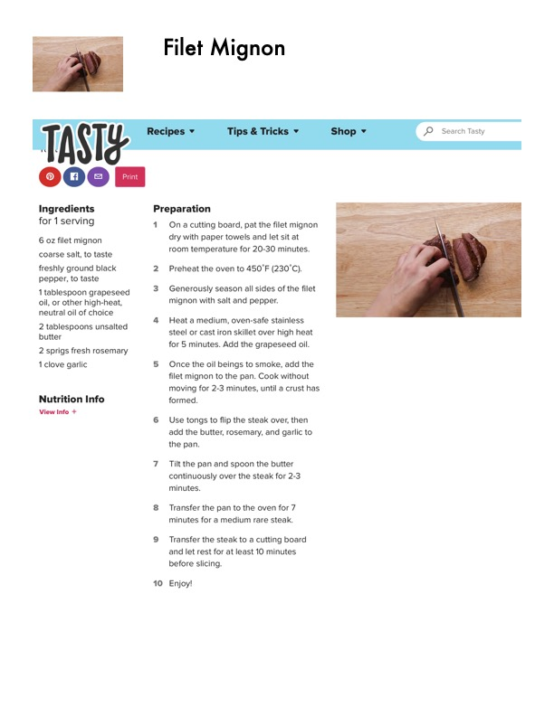

Filet Mignon

Original cookbook page 287
Ingredients
- 6 oz filet mignon
- coarse salt, to taste
- freshly ground black
- pepper, to taste
- 1 tablespoon grapeseed
- oil, or other high-heat,
- neutral oil of choice
- 2 tablespoons unsalted
- butter
- 2 sprigs fresh rosemary
- 1 clove garlic
- Nutrition Info
- View Info +
- Filet Mignon
- Preparation
- On a cutting board, pat the filet mignon
- dry with paper towels and let sit at
- room temperature for 20-30 minutes.
- Preheat the oven to 450°F (230°C).
- Generously season all sides of the filet
- mignon with salt and pepper.
- Heat a medium, oven-safe stainless
- steel or cast iron skillet over high heat
- for 5 minutes. Add the grapeseed oil.
- Once the oil beings to smoke, add the
- filet mignon to the pan. Cook without
- moving for 2-3 minutes, until a crust has
- formed
- Use tongs to flip the steak over, then
- add the butter, rosemary, and garlic to
- the pan.
- Tilt the pan and spoon the butter
- continuously over the steak for 2-3
- minutes.
- Transfer the pan to the oven for 7
- minutes for a medium rare steak.
- Transfer the steak to a cutting board
- and let rest for at least 10 minutes
- before slicing.
- 10 Enjoy!
Instructions
- Preheat the oven to 450°F (230°C). Heat a medium, oven-safe stainless add the butter, rosemary, and garlic to Transfer the pan to the oven for 7 Transfer the steak to a cutting board
Recipe #287 from collection